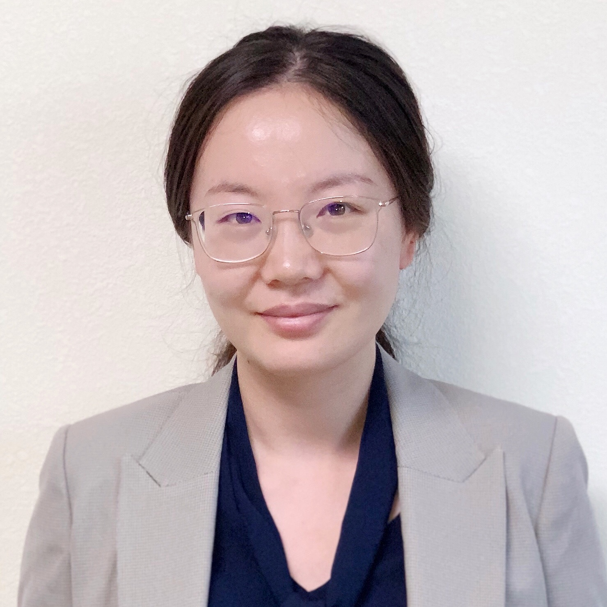
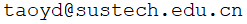

Yida Tao
Research Assistant Professor
College of Computer Science and Software Engineering
Shenzhen University
Research interests:
- Empirical Software Engineering
- NLP in Software Engineering
- Mining Software Repositories
- Program Comprehension
Publications
In the 29th ACM Joint European Software Engineering Conference and Symposium on the Foundations of Software Engineering, Athens, Greece, 2021, to appear [CCF-A]
In ACM Transactions on Software Engineering and Methodology, 2021, to appear [CCF-A]
In Proceedings of the 35th IEEE/ACM International Conference on Automated Software Engineering , Virtual Event, Sept. 2020
In Proceedings of the 27th IEEE International Conference on Software Analysis, Evolution and Reengineering, London, Ontario, Canada, Feb 2020. [CCF-B]
In Proceedings of the 34th IEEE/ACM International Conference on Automated Software Engineering (New Ideas), San Diego, USA, Nov. 2019
In Proceedings of the 12th Working Conference on Mining Software Repositories, Florence, Italy, May 16–17, 2015
In Proceedings of the 22nd ACM SIGSOFT International Symposium on the Foundations of Software Engineering, Hong Kong, Nov. 2014
In Proceedings of the 30th International Conference on Software Maintenance and Evolution, Victoria, BC, Canada, Sep 28-Oct 3, 2014
IEEE Transactions on Software Engineering, vol. 39, no. 11, pp. 1597-569, Nov 2013
In Proceedings of the 20th ACM SIGSOFT International Symposium on the Foundations of Software Engineering, North Carolina, November 11-16, 2012
Experience
Service
Teaching
Contact
